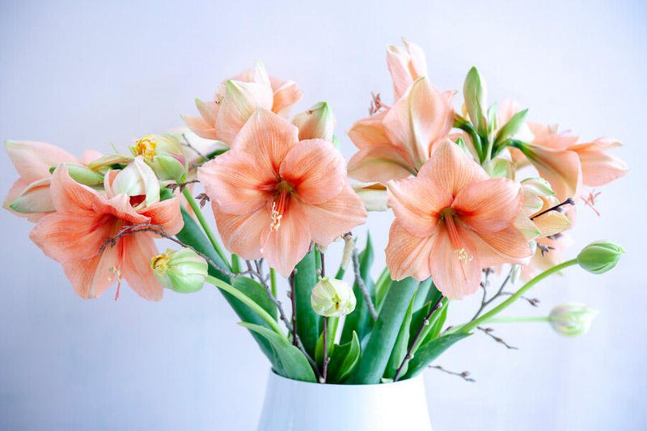
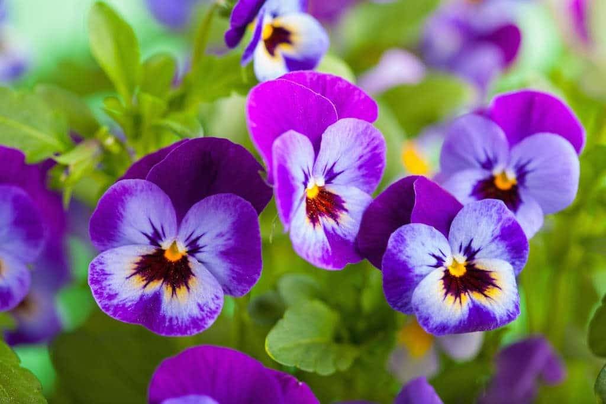
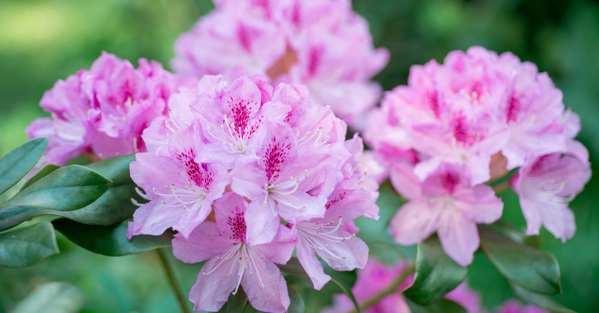
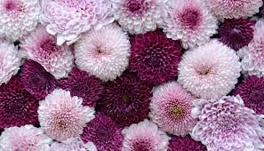

| ⋆˚✿˖°INICIO | ⋆˚✿˖°FLORES_DE_INVIERNO | ⋆˚✿˖°FLORES_DE_OTOÑO | ⋆˚✿˖°FLORES_DE_VERANO |
AMARILIS

La flor amarilis simboliza la belleza radiante que florece incluso en los momentos más difíciles. Representa el orgullo, la determinación y la fuerza interior que no necesita alardes para brillar. Su presencia elegante y su color vibrante son un recordatorio de que la luz interior siempre encuentra la manera de mostrarse al mundo.
VIOLA O PENSAMIENTO

La flor Pensamiento simboliza el recuerdo amoroso, la conexión entre almas y los pensamientos sinceros que habitan en el corazón. Su delicada forma y variedad de colores reflejan la sensibilidad, la reflexión y el cariño que perdura con el tiempo. Es una flor que susurra silenciosamente: "pienso en ti", incluso en la distancia.
RODODENDRO

El rododendro representa la elegancia en la resistencia, la pasión contenida y la belleza que florece en medio de la sombra. Es símbolo de protección, renovación y fuerza emocional. Su presencia serena pero impactante nos recuerda que el alma florece cuando se siente segura y libre.
CRISANTEMO

El crisantemo simboliza la eternidad del amor, la nobleza del espíritu y la luz que permanece incluso en los días más grises. Es una flor que representa la lealtad, la sabiduría y la paz interior. Su forma delicada pero resistente nos enseña que lo verdadero perdura, y que la belleza más pura a menudo florece en silencio.
En distintas culturas, el crisantemo también tiene matices únicos:
En Asia, especialmente en Japón, simboliza vida larga, alegría y perfección.
En Europa, suele asociarse con el recuerdo y el homenaje a los seres queridos.